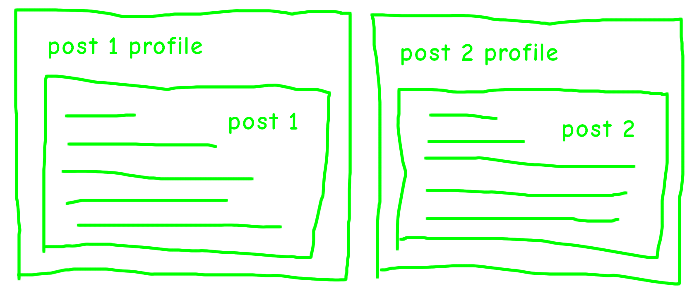

distill::create_post("new-post")
renv::activate(profile = "YYYY-MM-DD-new-post")
renv::install(
"distill",
"rmarkdown",
"palmerpenguins",
"dplyr"
)
renv::snapshot()
tl;dr
I think you can use the {renv} package to create separate reproducible environment profiles for each of your {distill} blog posts.
Profiled
Functionality comes and goes in R packages. How do you deal with that in the context of a blog built with R? What if you need to go back and change something in a post from four years ago?1
I built a demo {distill} blog to test whether the {renv} package might be a viable solution for reproducibility on a post-by-post basis.
{renv} is a package by Kevin Ushey that records your dependencies in a text ‘lockfile’. It typically works on the scale of a whole project, but since version 0.13.0 you can have multiple profiles within a given project.
I think this means that each post can have its own profile with its own distinct set of packages and package versions.
That means you can easily recreate a specific environment for a given post at a given time if you need to alter and re-render it in future.
Example
I’m presenting this here as a theory, really, but I’ve also made a demo blog to try it out. It seems to work.
There are two posts on the demo blog. They both use the {dplyr} package, but one depends on an old version (0.8.5) and one depends on the current version (1.0.8).
Using {renv} profiles means that these package versions don’t interfere with each other.
The post depending on the older {dplyr} version can’t access the across() function, but the post depending on the newer {dplyr} version can use across().
In other words, the environments associated with the profiles for each post are totally isolated from each other.
How to
Of course, you first need a blog. I used {distill}2 for the demo, a package by JJ Allaire, Rich Iannone, Alison Presmanes Hill and Yihui Xie. You can follow the guidance from RStudio, but basically:
- Create your blog with
distill::create_blog() - Build it with
rmarkdown::render_site()(or ‘Build Website’ from the Build pane of RStudio) - Initiate a reproducible environment for the blog as a whole with
renv::init()
And then a new-post workflow could look like this:
- Create a new post with
distill_create_post() - Activate a profile for the new post with
renv::activate(), providing a unique name to the profile argument (I suggest the post’s folder name as seen in the blog’s _posts/ folder) - Install the packages you need for the post with
renv::install() - Capture the dependencies in the profile’s lockfile with
renv::snapshot()
In code, that might look a bit like this:
For the demo blog, I called the two profiles ‘2022-03-14-dplyr-085’ and ‘2022-03-14-dplyr-108’, which you can see in the renv/profiles/ folder of the project repo.
These are named uniquely for the two separate folders in the _posts/ directory that contain each post’s files. This naming structure should make it easy to remember the profile associated with each post.
As I worked on the posts, I switched between the two profiles with renv::activate(), passing the relevant profile name to the profile argument.
Note that passing NULL as the profile argument means you switch to the default profile associated with the project as a whole, i.e. when you ran renv::init().
Yeah, but?
There are obvious pros and cons to this approach.
For example, maybe it’s a bit too dependent on the user: they have to remember to switch between the profiles, etc.
And I don’t think you can properly rebuild the site again with rmarkdown::render_site(), because this function will run based only the currently active {renv} profile, rather than rendering each post in the context of its own specific profile.
But ultimately isn’t it worthwhile to be able to rebuild a post in future if you need to change or update something? Maybe.
I’d be interested to hear other criticisms, especially before I try and use this approach for real.
Meanwhile, I know that Danielle Navarro has approached this with a more thought-out and sophisticated approach and has created a work-in-progress package called {refinery} to help build a separate environment for each post in a {distill} blog.
In general, Danielle’s blog does a brilliant job of explaining the problem of blog reproducibility and the technicals behind it. I suggest you read that post if you want to know more.
Environment
Session info
Last rendered: 2023-07-06 19:27:37 BSTR version 4.3.1 (2023-06-16)
Platform: aarch64-apple-darwin20 (64-bit)
Running under: macOS Ventura 13.2.1
Matrix products: default
BLAS: /Library/Frameworks/R.framework/Versions/4.3-arm64/Resources/lib/libRblas.0.dylib
LAPACK: /Library/Frameworks/R.framework/Versions/4.3-arm64/Resources/lib/libRlapack.dylib; LAPACK version 3.11.0
locale:
[1] en_US.UTF-8/en_US.UTF-8/en_US.UTF-8/C/en_US.UTF-8/en_US.UTF-8
time zone: Europe/London
tzcode source: internal
attached base packages:
[1] stats graphics grDevices utils datasets methods base
loaded via a namespace (and not attached):
[1] htmlwidgets_1.6.2 compiler_4.3.1 fastmap_1.1.1 cli_3.6.1
[5] tools_4.3.1 htmltools_0.5.5 rstudioapi_0.14 yaml_2.3.7
[9] rmarkdown_2.23 knitr_1.43.1 jsonlite_1.8.7 xfun_0.39
[13] digest_0.6.31 rlang_1.1.1 evaluate_0.21 Reuse
CC BY-NC-SA 4.0